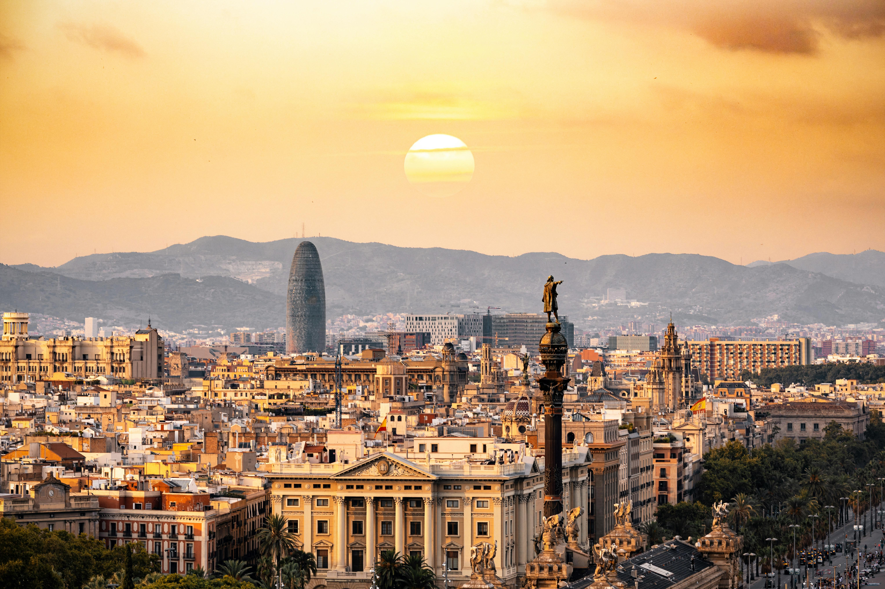
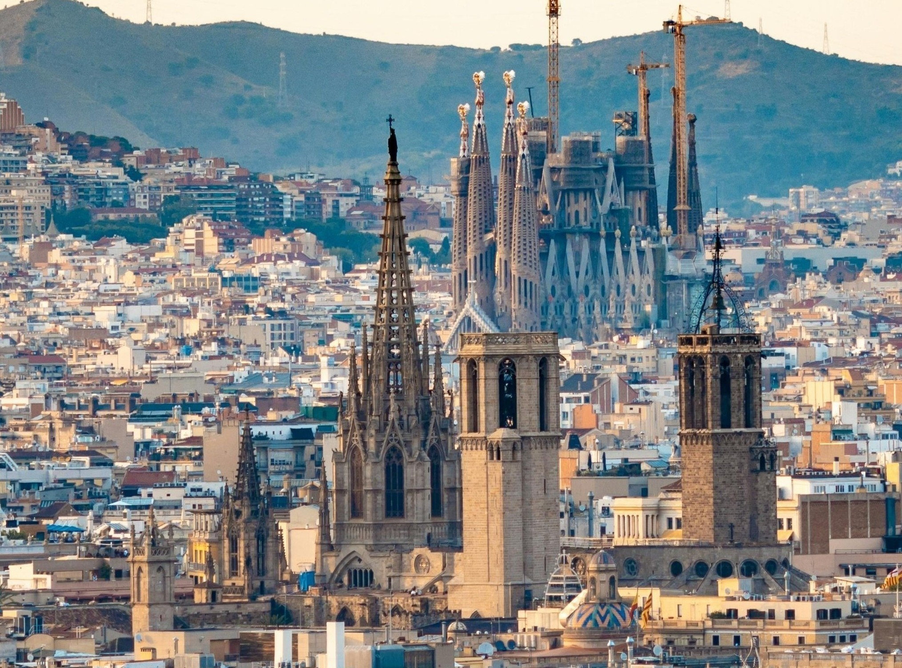
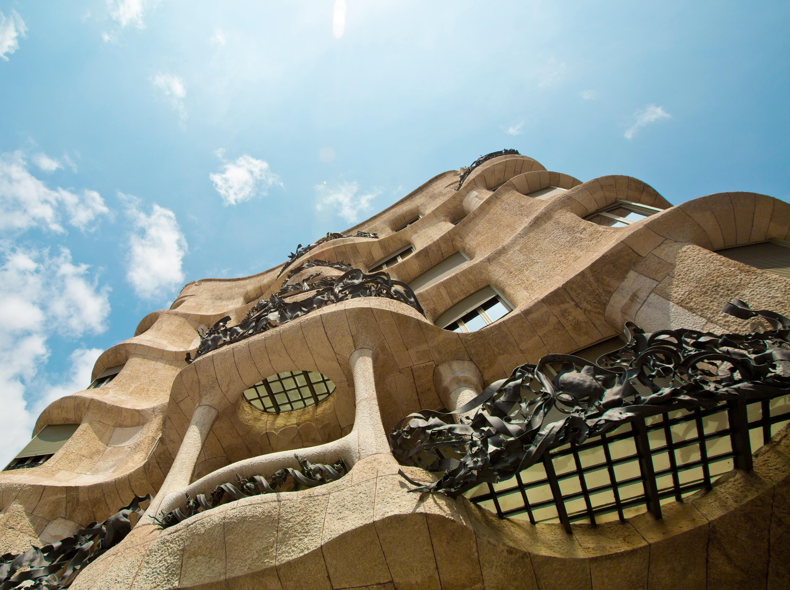

Explore Spain's Wonders
From vibrant cities to stunning coastlines, discover Spain's most breathtaking destinations.
View Destinations
Must-Visit Spanish Destinations
Spain offers diverse experiences from bustling cities to tranquil beaches. Here are some of the top destinations you shouldn't miss:
Barcelona
Barcelona stands recognized worldwide because of its outstanding architecture that Antoni Gaudí designed many of its principal landmarks throughout the city. Through his innovative approaches to building construction combined with natural design motifs Gaudí creates structures possessing a magical organic quality. The unfinished Sagrada Família exists as a tourist attraction through its intricate architectural details and elevated spires since its development began before a hundred years ago. Park Güell presents a magical environment featuring artwork benches which Gaudí enhanced through mosaic designs that lead visitors along bending walkways among his imaginative architectural elements.

Madrid
Madrid, Spain’s vibrant capital, is a cultural powerhouse known for its world-class museums and rich artistic heritage. At the heart of its art scene is the **Prado Museum**, home to masterpieces by Spanish legends like Velázquez, Goya, and El Greco, offering visitors a journey through centuries of European art. Equally impressive, the **Reina Sofía Museum** houses modern and contemporary works, including Picasso’s powerful anti-war painting *Guernica*. Beyond these renowned institutions, Madrid’s artistic energy extends to its many galleries, historic landmarks, and lively streets, where creativity and tradition come together to make the city a must-visit destination for art lovers.

Seville
As a historic cultural center Seville in Spain displays several extraordinary Spanish attractions. The Alcázar of Seville which received UNESCO World Heritage status has unique Mudejar elements that feature Islamic-Christian fusion through its elaborate tile designs and arches together with gardens of abundant plant life. The Seville Cathedral can be reached by a short walk from its location and claims the status of world's largest Gothic cathedral while hosting Christopher Columbus' tomb and breathtaking views from La Giralda bell tower. Traveled to Seville visitors experience an unforgettable journey through its magnificent buildings together with lively traditions set against the welcoming and charming Andalusian environment.

Regional Specialties
